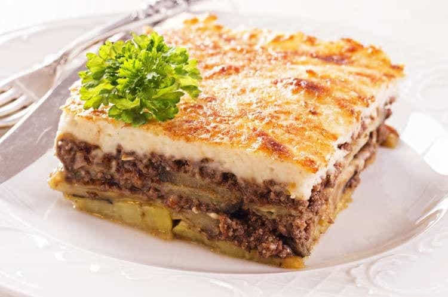

Mousakas

Description
Moussaka is an eggplant (aubergine)- or potato-based dish, often including ground meat, which is common in the
Balkans and the Middle East, with many local and regional variations.
The modern Greek variant was created in the 1920s by Nikolaos Tselementes. Many versions have a top layer made
of milk-based sauce thickened with egg (custard) or flour (béchamel sauce). In Greece, the dish is layered and
typically served hot.
Ingredients
- 2 large eggplants
- 500g ground beef or lamb
- 1 onion, chopped
- 2 cloves garlic, minced
- 400g canned tomatoes
- 100ml olive oil
- Salt and pepper to taste
- For the béchamel sauce: butter, flour, milk, nutmeg
- Grated cheese for topping
Steps
- Slice the eggplants, salt them, and let them drain for 30 minutes to remove bitterness.
- Rinse and dry the eggplants, then fry or grill until soft.
- In a pan, sauté onion and garlic in olive oil, add ground meat, cook until browned.
- Add tomatoes, salt, and pepper. Simmer the sauce for 20 minutes.
- Prepare béchamel sauce by melting butter, stirring in flour, then gradually adding milk and nutmeg until
thickened.
- In a baking dish, layer eggplants, meat sauce, then béchamel sauce on top.
- Sprinkle grated cheese on top and bake at 180°C for about 45 minutes until golden brown.
- Let it rest for 10 minutes before serving.
Back to Home